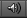

Audio Clips contain the audio data used by Audio Sources. Unity supports mono, stereo and multichannel audio assets (up to eight channels). The audio file formats that Unity can import are .aif, .wav, .mp3, and .ogg. Unity can also import tracker modules in the .xm, .mod, .it, and .s3m formats. The tracker module assets behave the same way as any other audio assets in Unity although no waveform preview is available in the asset import inspector.
| Property: | Function: | |
|---|---|---|
| Audio Format | The specific format that will be used for the sound at runtime. | |
| Native | This option offers higher quality at the expense of larger file size and is best for very short sound effects. | |
| Compressed | The compression results in smaller files but with somewhat lower quality compared to native audio. This format is best for medium length sound effects and music. | |
| 3D Sound | If enabled, the sound will play back in 3D space. Both Mono and Stereo sounds can be played in 3D. | |
| Force to mono | If enabled, the audio clip will be down-mixed to a single channel sound. | |
| Load Type | The method Unity uses to load audio assets at runtime. | |
| Decompress on load | Audio files will be decompressed as soon as they are loaded. Use this option for smaller compressed sounds to avoid the performance overhead of decompressing on the fly. Be aware that decompressing sounds on load will use about ten times more memory than keeping them compressed, so don’t use this option for large files. | |
| Compressed in memory | Keep sounds compressed in memory and decompress while playing. This option has a slight performance overhead (especially for Ogg/Vorbis compressed files) so only use it for bigger files where decompression on load would use a prohibitive amount of memory. Note that, due to technical limitations, this option will silently switch to Stream From Disc (see below) for Ogg Vorbis assets on platforms that use FMOD audio. | |
| Stream from disc | Stream audio data directly from disc. The memory used by this option is typically a small fraction of the file size, so it is very useful for music or other very long tracks. For performance reasons, it is usually advisable to stream only one or two files from disc at a time but the number of streams that can comfortably be handled depends on the hardware. | |
| Compression | Amount of Compression to be applied to a Compressed clip. Statistics about the file size can be seen under the slider. A good approach to tuning this value is to drag the slider to a place that leaves the playback “good enough” while keeping the file small enough for your distribution requirements. | |
| Hardware Decoding | (iOS only) On iOS devices, Apple’s hardware decoder can be used resulting in lower CPU overhead during decompression. Check out platform specific details for more info. | |
| Gapless looping | (Android/iOS only) Use this when compressing a seamless looping audio source file (in a non-compressed PCM format) to ensure perfect continuity is preserved at the seam. Standard MPEG encoders introduce a short silence at the loop point, which will be audible as a brief “click” or “pop”. | |
The Preview window contains three icons.
 When Auto Play is on the clips will play as soon as they are selected.
When Loop is on the clips will play in a continual loop.
This will play the clip.
Unity supports both Compressed and Native Audio. Any type of file (except MP3/Ogg Vorbis) will be initially imported as Native. Compressed audio files must be decompressed by the CPU while the game is running, but have smaller file size. If Stream is checked the audio is decompressed on the fly, otherwise it is decompressed completely as soon as it loads. Native PCM formats (WAV, AIFF) have the benefit of giving higher fidelity without increasing the CPU overhead, but files in these formats are typically much larger than compressed files. Module files (.mod,.it,.s3m..xm) can deliver very high quality with an extremely low footprint.
As a general rule of thumb, Compressed audio (or modules) are best for long files like background music or dialog, while Native is better for short sound effects. You should tweak the amount of Compression using the compression slider. Start with high compression and gradually reduce the setting to the point where the loss of sound quality is perceptible. Then, increase it again slightly until the perceived loss of quality disappears.
If an audio clip is marked as a 3D Sound then it will be played back so as to simulate its position in the game world’s 3D space. 3D sounds emulate the distance and location of sounds by attenuating volume and panning across speakers. Both mono and multiple channel sounds can be positioned in 3D. For multiple channel audio, use the spread option on the Audio Source to spread and split out the discrete channels in speaker space. Unity offers a variety of options to control and fine-tune the audio behavior in 3D space - see the Audio Source component reference for further details.
On mobile platforms compressed audio is encoded as MP3 to take advantage of hardware decompression.
To improve performance, audio clips can be played back using the Apple hardware codec. To enable this option, check the “Hardware Decoding” checkbox in the Audio Importer. Note that only one hardware audio stream can be decompressed at a time, including the background iPod audio.
If the hardware decoder is not available, the decompression will fall back on the software decoder (on iPhone 3GS or later, Apple’s software decoder is used in preference to Unity’s own decoder (FMOD)).
On mobile platforms compressed audio is encoded as MP3 to take advantage of hardware decompression.